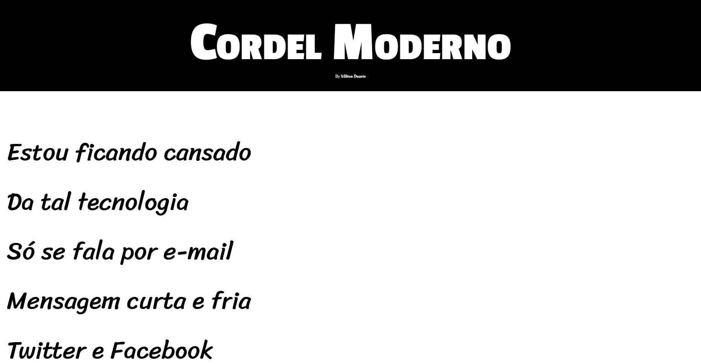
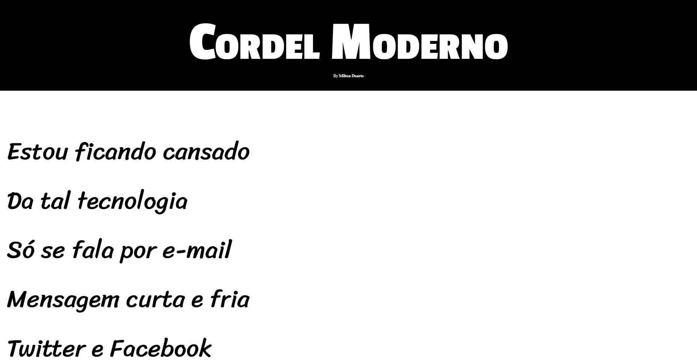

Parallax Cordel
An immersive parallax website showcasing verses from Milton Duarte’s renowned "Modern Cordel". This project blends visual storytelling with Brazilian poetic heritage.
 See more on GitHubAn immersive parallax website showcasing verses from Milton Duarte’s renowned "Modern Cordel". This project blends visual storytelling with Brazilian poetic heritage.
 See more on GitHub